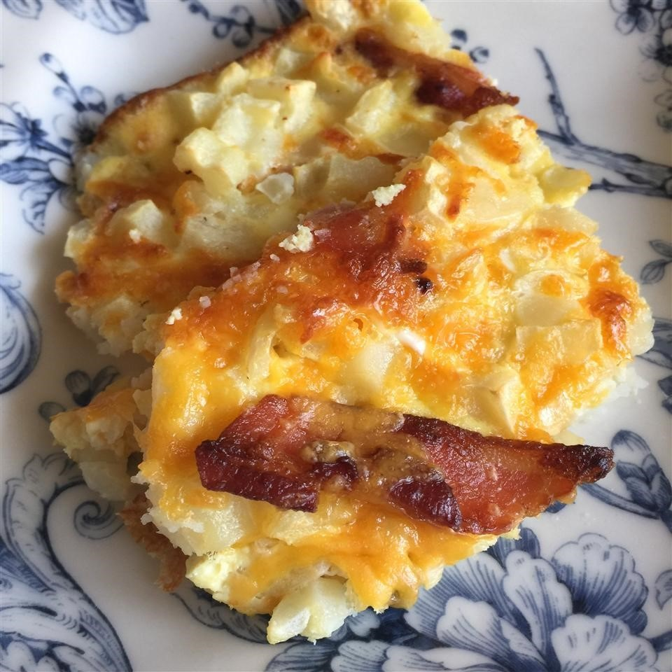

Back
Egg and Hash Brown Pie

Ingredients:
- 6 slices bacon
- 5 eggs
- ½ cup milk
- 3 cups frozen hash brown potatoes, thawed
- ⅓ cup chopped green onions
- 1 ½ cups shredded Cheddar cheese, divided
Directions:
-
Place bacon in a large, deep skillet. Cook over medium high heat until evenly brown. Drain, crumble, and
set aside.
- Preheat oven to 350 degrees F (175 degrees C). Lightly grease a 7x11 inch baking dish.
-
In a large bowl, beat together the eggs and milk. Stir in the bacon, hash browns, green onions, and 1
cup shredded Cheddar cheese. Pour into the prepared baking dish.
-
Bake in the preheated oven 25 to 35 minutes, or until a knife inserted in the center comes out clean.
Sprinkle the remaining Cheddar cheese on top, and continue baking for 3 to 4 minutes, or until the
cheese is melted. Remove from oven, and let sit 5 minutes before serving.